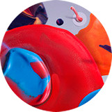
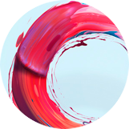
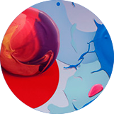
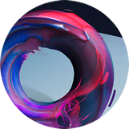

Если тебе от 14 до 24: Зайди в чат, выбери консультанта - задай свои вопросы.

Не злись, если не приходит мгновенный ответ - консультанты и консультантки всегда отвечают так скоро, насколько это возможно физически и технически.

Если все консультанты и консультантки заняты в данный момент, зайди в чат позже. Возможно, за это время ты найдёшь ответ на свой вопрос среди FAQ (ответы на часто задаваемые вопросы) или среди статей Drugstore.

Возможно, твой вопрос не требует скорого ответа или ты предпочитаешь переписку по электронке, тогда отправь свой вопрос на нашу электронную почту. Будь внимателен с адресом - ответ будет отправлен на тот е-мейл, с которого придёт вопрос.